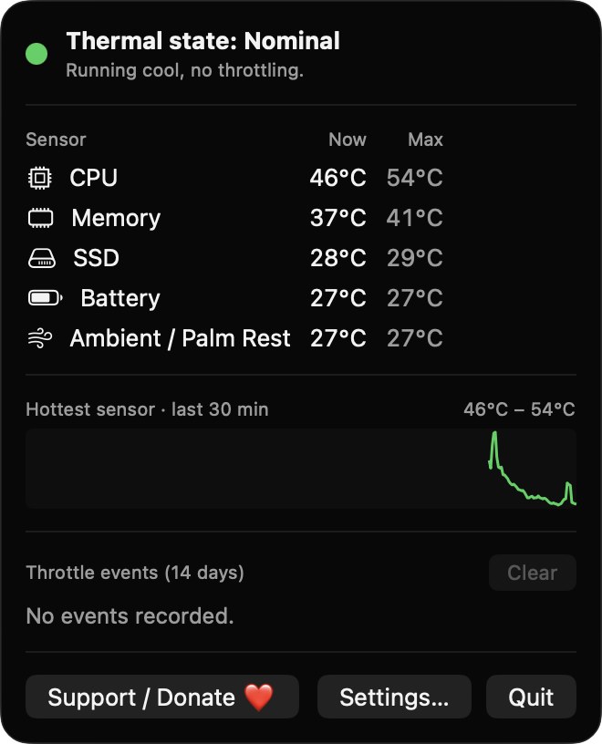
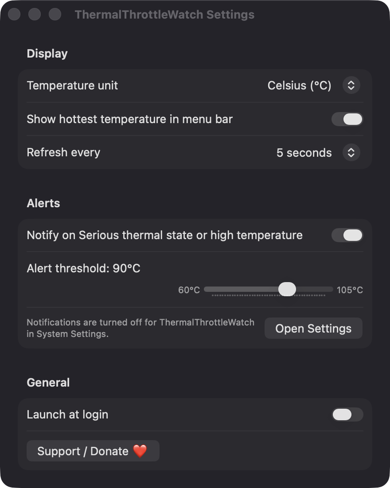

Live sensor temperatures
See current and peak values for CPU, GPU, memory, SSD, battery and ambient sensors. Only sensors that return a plausible reading on your Mac are listed.
Open source · macOS 14+ · Universal binary · System Monitoring
ThermalThrottleWatch lives in your menu bar and shows the system thermal state and sensor temperatures at a glance. Click the thermometer for details, and get a notification when throttling begins.
Free & MIT licensed · Apple Silicon & Intel · Latest release

Features
Is your Mac under thermal stress right now? Everything here exists to answer that, read-only and on-device.
See current and peak values for CPU, GPU, memory, SSD, battery and ambient sensors. Only sensors that return a plausible reading on your Mac are listed.
A thermometer icon is tinted by the system state: Nominal, Fair, Serious or Critical. Optionally show the hottest sensor's temperature beside it.
Get notified when the state reaches Serious or the hottest sensor passes your threshold (60 to 105 °C). A second notification tells you when it has cooled down.
A sparkline tracks the hottest sensor, and each throttle episode is logged with its start time and duration for 14 days.
Readings are smoothed, recovery needs a 3 °C drop, and the same condition notifies at most once every 5 minutes. Choose Celsius or Fahrenheit and a 2, 5 or 10 second refresh.
No fan control, no accounts, no servers and no analytics. If sensors cannot be read, it falls back to the system thermal state and tells you so.
Screenshots

Install
ThermalThrottleWatch is open source and not notarized with a paid Apple Developer ID, so macOS needs one extra step the first time.
xattr -cr /Applications/ThermalThrottleWatch.app
Download
Free, forever. Built for macOS 14 Sonoma or newer, Apple Silicon and Intel.
Not notarized: on first launch right-click ThermalThrottleWatch.app → Open.
FAQ
Yes. It is released under the MIT license, with no ads, accounts or paywalls. The full source is on GitHub, and you can support development with the optional Support button.
Only notifications, so it can warn you about throttling and recovery. Launch at login is optional, and it never asks for Accessibility, Screen Recording, Microphone, Camera or Location.
On your Mac only. Settings are saved in app preferences, and the 14-day throttle event log is a JSON file in Application Support. Nothing is sent anywhere.
Notarization requires a paid Apple Developer account, which this free project doesn't have. Right-click the app and choose Open once to approve it, or build it from source with Xcode.
Support ❤️
ThermalThrottleWatch is a free, open-source alternative to paid utilities. If it earns a spot on your Mac, a coffee keeps the updates coming.
☕ Support Or on Ko-fi